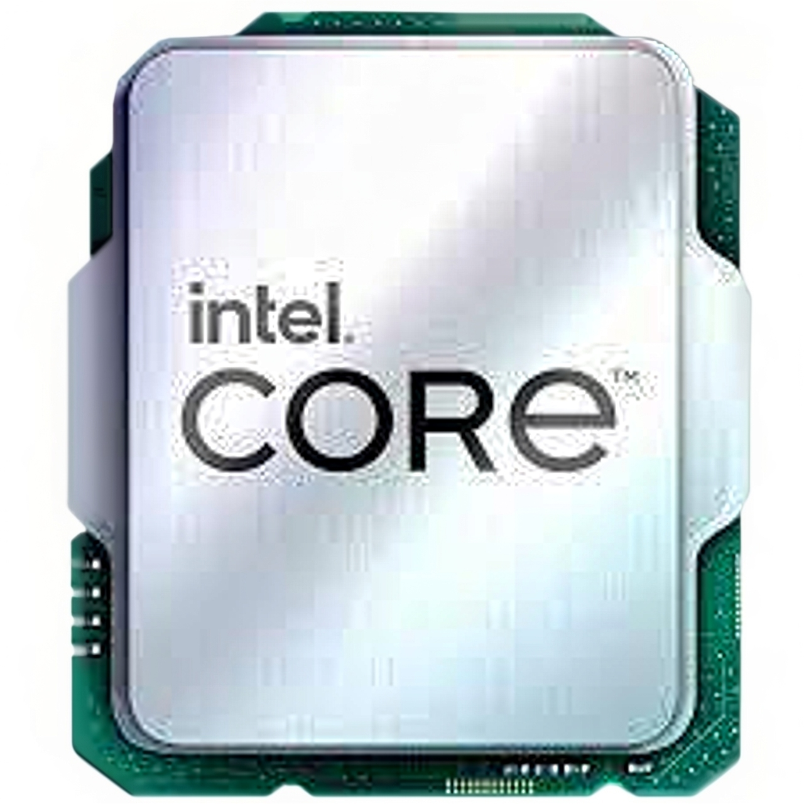
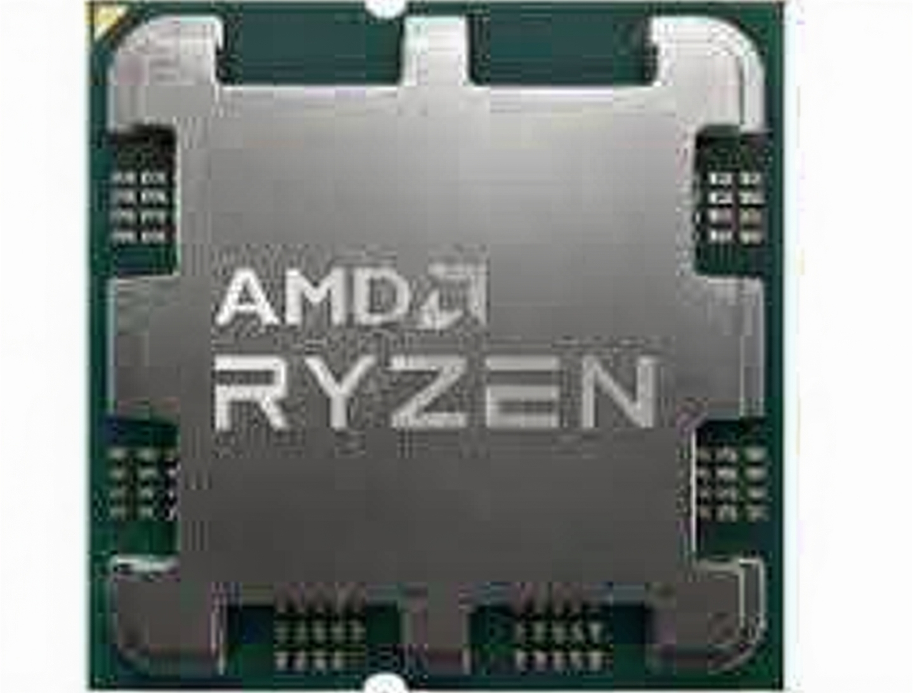
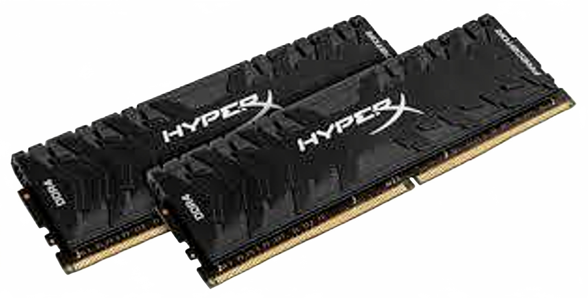
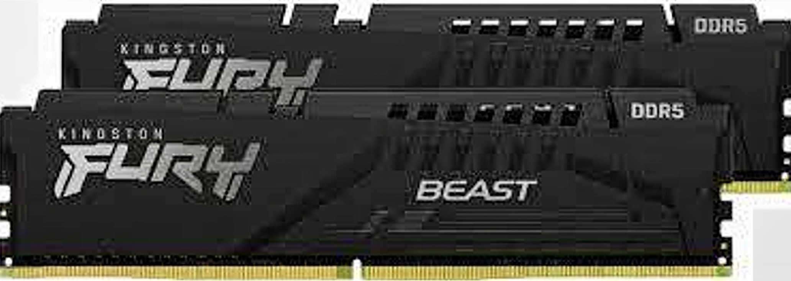
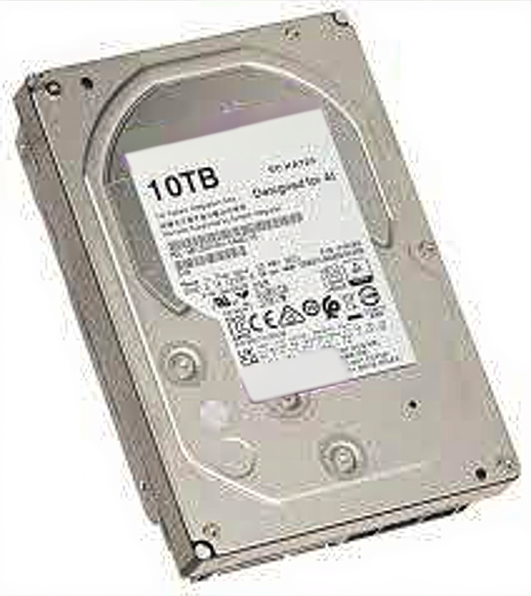

Что такое комплектующие?
Комплектующие - это части компьютера, которые выполняют определённые функции
Далее мы разберем что делает каждая комплектующая
Материнская плата
Материнская плата (также известна как системная плата или материнка) — это самая главная деталь внутри компьютера или ноутбука. Это большая печатная плата, к которой подключаются все остальные компоненты.
Простыми словами, материнская плата — это «тело» или «нервная система» компьютера. Она не только объединяет все детали в единый организм, но и обеспечивает их электричеством и позволяет им общаться друг с другом.
Из чего состоит материнская плата и за что отвечают её части?
- Сокет (Разъем процессора): Это самое главное гнездо на плате, куда устанавливается процессор (CPU). Сокеты бывают разные (например, для Intel или AMD), и процессор должен подходить к сокету как ключ к замку.
- Слоты оперативной памяти (RAM): Длинные узкие разъемы рядом с процессором. В них вставляются плашки оперативной памяти. Чем больше слотов, тем больше памяти можно установить.
- Слоты расширения (PCIe): Это разъемы, расположенные горизонтально в нижней части платы.Самый верхний и быстрый слот (обычно PCIe x16) предназначен для видеокарты.В остальные слоты можно вставить звуковую карту, сетевую карту, или специальные платы захвата видео.
- Чипсет: Это набор микросхем на плате, который работает как диспетчер. Он управляет потоками данных между процессором, видеокартой, жесткими дисками и внешними устройствами. Чипсет определяет, какие современные функции будут у компьютера (например, возможность разгона процессора).
- Разъемы для накопителей:
SATA: К ним подключают обычные жесткие диски (HDD) и классические твердотельные накопители (SSD).
M.2: Это маленькие, узкие разъемы на самой плате. В них вставляются современные скоростные SSD-накопители, похожие на маленькие планки памяти.
- Разъем питания: Массивный разъем (обычно 24 контакта) для подключения блока питания, который подает электричество на плату.
- Задняя панель (Порты ввода-вывода): Та сторона платы, которая выходит наружу системного блока. Там находятся разъемы для подключения внешних устройств:
USB (для мышки, клавиатуры, флешек).
HDMI, DisplayPort, VGA (для подключения монитора, если нет отдельной видеокарты).
Аудиоразъемы (для колонок и микрофона).
Разъем Ethernet (для интернет-кабеля).
Почему это важно?
Материнская плата определяет потенциал вашего компьютера. От неё зависит:
- Какой мощный процессор вы сможете поставить.
- Сколько оперативной памяти у вас будет.
- Можно ли будет установить современный скоростной SSD.
- Можно ли будет подключить две видеокарты сразу.
Краткий итог: Материнская плата — это фундамент, на котором строится весь компьютер. Если фундамент слабый или дешевый, то даже самые мощные детали не смогут работать на полную силу.
Видеокарта
Видеокарта (также известная как графическая карта или GPU — Graphics Processing Unit) — это устройство внутри компьютера, которое отвечает за формирование и вывод изображения на экран монитора.
Если материнская плата — это «тело» компьютера, а процессор — его «мозг», то видеокарту можно назвать «глазами» или, точнее, «художником» компьютера.
Процессор (CPU) думает над задачами, но он не умеет красиво рисовать. Он говорит видеокарте: «Нарисуй-ка мне вот этот взрыв в игре и вот то окно Windows». Видеокарта берет эти команды, просчитывает, как должны выглядеть пиксели, и отправляет готовую картинку на монитор
Почему видеокарта так важна?
Для обычной работы (текст, таблицы, интернет) хватает возможностей процессора или простенькой видеокарты. Но для некоторых задач требуется отдельное мощное устройство:
- Игры: Современные игры — это сложные 3D-миры с реалистичным освещением, тенями и текстурами. Видеокарта занимается просчетом всей этой графики в реальном времени.
- Работа с графикой и видео: Профессиональные программы для монтажа видео (Adobe Premiere), 3D-моделирования (Blender, 3ds Max) и дизайна используют видеокарту для рендеринга (построения финального изображения) и обработки эффектов.
- Майнинг и научные расчеты: Видеокарты отлично справляются с большими объемами простых математических вычислений (параллельные вычисления), поэтому их часто используют для добычи криптовалют и в научных симуляциях.(Собранных ПК с данными видеокартами на сайте представленно не будет.)
Из чего состоит видеокарта?
На самом деле, видеокарта — это почти самостоятельный компьютер внутри вашего компьютера.
У нее есть собственные компоненты:
- Графический процессор (GPU): Это «мозг» видеокарты. Он занимается исключительно графикой и геометрией. В отличие от обычного процессора, у него тысячи маленьких ядер, которые работают параллельно, чтобы быстро обрабатывать изображение. Главные производители GPU — NVIDIA и AMD.
- Видеопамять (VRAM): Это «оперативная память» видеокарты. В нее загружаются текстуры, 3D-модели и промежуточные кадры. Чем больше видеопамяти, тем более качественные текстуры и в более высоком разрешении может выводить карта (например, 4K или 8K). Измеряется в Гигабайтах.
- Система охлаждения: Так как GPU во время работы сильно нагревается, на видеокарте обязательно есть радиатор и вентиляторы (или система жидкостного охлаждения), чтобы отводить тепло.
- Печатная плата и разъемы питания: На ней расположены сам GPU, чипы памяти и разъемы для подключения дополнительного питания от блока компьютера (так как видеокарты потребляют много энергии).
- Видеовыходы: Разъемы на задней планке карты для подключения монитора.
HDMI (для современных мониторов, телевизоров).
DisplayPort (для мониторов с высоким разрешением и частотой обновления).
Устаревшие DVI и VGA.
Виды видеокарт
- Встроенные (Интегрированные):
Это графический чип, встроенный прямо в процессор.
Плюсы: Экономия денег и электроэнергии.
Минусы: Слабая производительность.
Подходят только для офисной работы, просмотра фильмов и простейших игр (пасьянсы, Minecraft на минималках).
- Это отдельная плата, которая вставляется в слот материнской платы.
Плюсы: Высокая производительность для игр и работы.
Минусы: Стоят дорого, требуют мощного блока питания и хорошего охлаждения в корпусе.
Процессор
Процессор (или Центральный процессор, CPU — Central Processing Unit) — это «мозг» компьютера. Это главная микросхема, которая выполняет все команды и управляет работой всех остальных устройств.
Если продолжить аналогию с человеческим телом:
- Материнская плата — это скелет и нервная система.
- Видеокарта — это художник, рисующий картинку.
- Процессор — это мозг, который думает, принимает решения и руководит процессом.
Он получает информацию от программ (например, от браузера или игры), обрабатывает её с помощью математических вычислений и отдаёт команды другим устройствам: «Видеокарта, нарисуй этот кадр!», «Жёсткий диск, сохрани этот документ!».
Как понять, на что способен процессор?
Представьте, что процессор — это шеф-повар на очень занятой кухне. Чтобы понять, насколько быстро он справится с потоком заказов, нужно знать три главные вещи:
- Количество ядер (Количество рук повара):
Раньше процессоры были однорукими — могли делать только одно дело в один момент времени.
Современные процессоры — многорукие. У них несколько ядер. Каждое ядро — это отдельный «повар», который может готовить своё блюдо.
2 ядра: Повар может одновременно чистить картошку и резать лук. Хватит для интернета и фильмов.
4-6 ядер: Повар может готовить суп, жарить мясо, делать салат и следить за десертом. Оптимально для современных игр.
8+ ядер: Огромная команда поваров, способная готовить банкет на 100 персон. Нужно для профессиональной работы (видеомонтаж, 3D-моделирование) или очень тяжелых игр.
- Тактовая частота (Скорость рук повара):
Измеряется в Гигагерцах (ГГц). Показывает, сколько операций в секунду может выполнять одно ядро.
Чем выше цифра (например, 4.2 ГГц вместо 2.0 ГГц), тем быстрее «шеф-повар» шевелится. Это важно для задач, которые не умеют распараллеливаться на много ядер, например, для многих старых игр.
- Кэш-память (Размер рабочего стола повара):
Это сверхбыстрая память внутри самого процессора. Там хранятся самые срочные и часто используемые данные, чтобы процессору не приходилось каждый раз лезть за ними в медленную оперативную память.
Чем больше «рабочий стол» (кэш), тем быстрее повар может работать, потому что всё нужное под рукой.
Два главных производителя
Как и в мире видеокарт, на рынке процессоров правят две компании:
- Intel: Процессоры Core i3 (начальный уровень), i5 (средний, игровой), i7 (высокий), i9 (топовый).
- AMD: Процессоры Ryzen 3, 5, 7, 9. В последние годы AMD набрала огромную популярность, так как предлагает много ядер по более доступной цене, особенно для игр и работы.
Важное дополнение
Тепловыделение (TDP): Процессор сильно греется во время работы (как мозг во время экзамена). Чем он мощнее, тем больше тепла выделяет. Ему обязательно нужен кулер (вентилятор с радиатором), чтобы не перегреться и не выйти из строя.
Совместимость: Процессор — это микросхема, которая вставляется в специальный разъем (сокет) на материнской плате. Процессор Intel не вставить в материнскую плату для AMD, и наоборот. Подробнее о сокетах можно узнать на странице "Совместимость"
Краткий итог: Процессор — это вычислительный центр. От него зависит, как быстро ваш компьютер откроет программу, справится с кодированием видео и будет ли вообще «тянуть» современные игры в связке с видеокартой.


ОЗУ
ОЗУ (оперативное запоминающее устройство) или RAM (Random Access Memory — память с произвольным доступом) — это «временная» или «рабочая» память компьютера. Это место, где хранятся данные и команды, с которыми процессор работает прямо сейчас, в данную секунду.
Продолжим аналогию с человеческим телом и кухней, которую мы использовали для процессора и видеокарты:
- Процессор — это шеф-повар.
- Жесткий диск (SSD/HDD) — это склад продуктов и холодильник, где хранится всё (документы, фильмы, игры), даже когда компьютер выключен.
- ОЗУ — это рабочий стол повара.
Как это работает?
Когда вы запускаете программу (например, браузер или игру), процессор не лезет сразу на «склад» (диск). Это слишком долго. Он берет нужные файлы со склада и раскладывает их на «рабочем столе» — в ОЗУ.
- Браузер: Вы открыли браузер — его файлы загрузились в ОЗУ. Вы открыли 10 вкладок — они тоже лежат на «рабочем столе». Пока вы читаете эту статью, она хранится в ОЗУ.
- Игра: Вы запустили игру. Пока идет загрузка, уровни, текстуры и модели персонажей переезжают с медленного диска в быструю ОЗУ. Процессор обращается к ОЗУ, чтобы мгновенно получить нужную информацию и нарисовать кадр.
Как только вы закрываете программу, её данные исчезают с «рабочего стола» (ОЗУ очищается). Когда вы выключаете компьютер, ОЗУ полностью пустеет — это энергозависимая память, ей нужно постоянное питание.
Почему ОЗУ важно и на что влияет?
- Скорость работы: ОЗУ работает в десятки и сотни раз быстрее, чем самый лучший SSD. Именно поэтому компьютер не тормозит, когда вы переключаетесь между задачами.
- Многозадачность: Объем ОЗУ определяет, сколько программ вы можете держать открытыми одновременно.
Маленький «стол» (4 ГБ) — поместится только браузер и Word, игры уже не влезут.
Большой «стол» (16–32 ГБ) — можно открыть браузер с кучей вкладок, фотошоп, игру и стриминг — и всё будет работать плавно.
- Производительность в играх: Если игре не хватает ОЗУ, она начинает использовать часть диска как «костыль» (файл подкачки), но диск медленный — начинаются «фризы» и подвисания.
Главные характеристики ОЗУ
Чтобы выбрать правильную память, нужно знать три вещи:
- Объем (Гигабайты): Сколько данных помещается на столе.
8 ГБ: Минимум для комфортной офисной работы и нетребовательных игр.
16 ГБ: Современный стандарт для игрового ПК.
32 ГБ и больше: Для профессиональной работы (видеомонтаж, 3D, виртуальные машины).
- Поколение (DDR): Тип «стола». Сейчас актуальны DDR4 (в большинстве компьютеров) и новейшая DDR5 (в самых свежих сборках). Они несовместимы между собой — нужно смотреть, что поддерживает ваша материнская плата и процессор.
- Частота (МГц) и тайминги: Насколько быстрый «стол». Чем выше частота и ниже задержки (тайминги), тем быстрее процессор может брать и отдавать данные. Это дает небольшой, но приятный прирост производительности, особенно в играх.
Чем ОЗУ отличается от диска (SSD/HDD)?
- ОЗУ (RAM): Очень быстрая, но временная. Без питания всё стирается. Используется для текущих задач.
- Диск (SSD/HDD): Медленнее, но постоянная. Данные сохраняются после выключения. Используется для хранения файлов, игр, системы.
Краткий итог: ОЗУ — это скоростной буфер между процессором и диском. Чем больше у вас оперативной памяти, тем больше задач компьютер может выполнять одновременно без «тормозов».


Накопители(HDD,SSD)
Жесткий диск (также известный как HDD — Hard Disk Drive или винчестер) — это устройство для долговременного хранения информации в компьютере.
Продолжая нашу любимую аналогию с кухней и поваром:
- Процессор — это шеф-повар, который готовит блюда (выполняет вычисления).
- ОЗУ (RAM) — это рабочий стол повара, где разложены продукты и инструменты для текущего блюда (данные, с которыми идет работа прямо сейчас).
- Жесткий диск — это огромный холодильник и кладовая со стеллажами. Здесь хранятся все продукты (файлы) впрок, даже когда повар ушел домой (компьютер выключен).
Когда вы включаете компьютер, повар (процессор) идет в кладовую (диск), достает оттуда рецепт (операционную систему Windows) и раскладывает ингредиенты на столе (в ОЗУ), чтобы начать готовить.
Главная задача жесткого диска
Сохранять всё, что должно остаться после выключения питания:
- Операционная система (Windows, macOS, Linux).
- Ваши программы (Microsoft Office, браузер, игры).
- Ваши личные файлы (фотографии, фильмы, музыка, документы).
Если у вас сломается процессор или видеокарта — информацию можно спасти. Если сломается жесткий диск — вы можете потерять все свои данные навсегда.
Два кита: HDD и SSD (и чем они отличаются)
Когда люди говорят «жесткий диск», они часто подразумевают устройство для хранения данных. Но технически сейчас существует два совершенно разных типа таких устройств. Важно знать разницу, так как они работают по-разному.
1. HDD (Hard Disk Drive) — Классический жесткий диск
Это старая, проверенная технология. Внутри металлического коробка находятся круглые магнитные пластины (блины), которые крутятся с огромной скоростью (5400 или 7200 оборотов в минуту). Специальная головка считывает информацию, летая над поверхностью этих пластин.
- Плюсы: Очень дешево стоит за гигабайт. Можно купить диск на 4–10 Терабайт по приемлемой цене.
- Минусы: Медленный, шумный (слышно жужжание и щелчки), боится тряски (если ударить во время работы, головка может поцарапать пластину — привет, потерянные фото).
2. SSD (Solid-State Drive) — Твердотельный накопитель
Это новое поколение. Внутри нет движущихся деталей. Это просто набор микросхем памяти, похожих на большую флешку.
- Плюсы: Очень быстрый (компьютер включается за секунды, игры грузятся мгновенно), абсолютно бесшумный, не боится тряски, меньше греется.
- Минусы: Дороже (за тот же объем придется заплатить больше), ресурс ячеек памяти ограничен (хотя для домашнего использования хватает на годы).
Как они выглядят и подключаются?
HDD и старые SSD (форм-фактор 2.5 или 3.5 дюйма): Это коробочки, которые ставятся в специальную корзину внутри системного блока. Подключаются они кабелем к материнской плате (обычно SATA-кабель) и кабелем питания от блока.
Современные SSD (форм-фактор M.2): Они выглядят как маленькие прямоугольные плашки, которые втыкаются прямо в материнскую плату, как оперативная память, и прикручиваются винтиком. Они еще быстрее и не требуют проводов.
Что выбрать?
- Для системы (Windows) и самых нужных программ обязательно ставьте SSD (особенно M.2). Компьютер будет «летать».
- Для хранения фильмов, музыки, фотографий и архивов можно поставить большой HDD. Фильму всё равно, с какой скоростью его читают, а экономия места существенная.
Краткий итог: Жесткий диск (или SSD) — это хранилище ваших данных. От его скорости зависит, как быстро загрузится компьютер и запустятся программы. От его надежности зависит, не потеряете ли вы семейный фотоархив.


Блоки питания
Блок питания (БП) — это устройство, которое преобразует электричество из обычной розетки (220 Вольт переменного тока) в пригодное для компьютера напряжение (например, 12 В и 5 В постоянного тока) и распределяет его по всем комплектующим.
Продолжая нашу метафору с рестораном и поварами:
- Процессор — шеф-повар.
- ОЗУ — рабочий стол.
- Жесткий диск — кладовая.
- Блок питания — это электростанция и электрик в подвале ресторана.
Он тянет провода к каждой плите (видеокарте), к каждому холодильнику (дискам) и к лампочке над столом шеф-повара (процессору).
Если электрик слабый или проводка старая, лампочка будет мигать, а плиты — глохнуть в самый ответственный момент.
Почему блок питания важен?
Очень часто новички собирают мощный компьютер, покупают дорогой процессор и видеокарту, а на блоке питания экономят, беря первый попавшийся дешевый. Это грубая ошибка. Плохой блок питания может:
- Вызвать нестабильность: Компьютер будет сам выключаться или перезагружаться в играх, потому что блоку не хватает мощности.
- Сжечь комплектующие: При скачке напряжения или коротком замыкании хороший блок питания сгорит сам, но защитит материнскую плату и видеокарту. Дешевый БП может отправить высокое напряжение прямиком в процессор, убив его и всё вокруг.
- Быть шумным: В дешевых блоках стоят плохие вентиляторы, которые громко гудят.
Как он устроен и работает?
Блок питания — это металлическая коробка с вентилятором, которая крепится в корпусе компьютера (обычно сверху или снизу). От нее выходит пучок проводов. Эти провода подключаются ко всем устройствам:
- Самый большой и широкий разъем (24-pin): Идет к материнской плате, чтобы дать ей жизнь.
- Дополнительный 4+4 pin: Идет к процессору (обычно в верхней части платы).
- Разъемы PCI-E (6+2 pin): Идут к видеокарте. Мощным видеокартам нужно 2 таких провода, а то и 3.
- Разъемы SATA: Плоские, Г-образные разъемы. Для питания жестких дисков и SSD.
- Разъемы Molex: Старые, с 4 круглыми отверстиями. Раньше для дисководов, сейчас для дополнительных вентиляторов корпуса или подсветки.
Главные характеристики
- Мощность (Ватт, W): Самое главное число. Показывает, сколько энергии блок может выдать. Для офисного ПК хватит 400-500 Ватт. Для игрового с мощной видеокартой нужно 650, 750 или даже 1000+ Ватт.
- КПД (Коэффициент полезного действия): Показывает, сколько энергии из розетки доходит до комплектующих, а сколько улетает в виде тепла. Чем выше КПД, тем меньше блок греется и меньше вы платите за электричество. Лучшие блоки получают сертификат 80 Plus (бронза, серебро, золото, платина). Золотой стандарт — 80 Plus Gold.
- Модульность: Бывают блоки, у которых все провода намертво припаяны. В современных сборках удобнее брать модульные БП — туда можно подключить только те провода, которые нужны прямо сейчас, а остальные убрать в коробку. Это сильно упрощает укладку проводов в корпусе (чистый "нейро-менеджмент").
Важное предупреждение (Техника безопасности)
Никогда не открывайте блок питания самостоятельно, если он сломался! Даже если он выключен из розетки, внутри него находятся большие конденсаторы, которые хранят опасный для жизни электрический заряд. Это дело профессионалов.
Краткий итог: Блок питания — это сердце компьютера, которое качает энергию. Не экономьте на нем. Хороший, качественный БП от проверенного бренда (Corsair, Seasonic, be quiet!, Chieftec и др.) — залог долгой и стабильной жизни вашего компьютера.
Системы охлаждения процессора
Система охлаждения процессора (или кулер процессора) — это устройство, которое отводит тепло от крышки процессора и рассеивает его в воздухе, чтобы чип не перегрелся и не вышел из строя.
Вернемся к нашей аналогии с рестораном и поваром.
- Процессор — это шеф-повар, который очень активно работает (считает), и от этого у него начинает «кипеть голова».
- Система охлаждения — это персональный кондиционер и вентилятор, который висит прямо над рабочим местом повара и обдувает его, чтобы он не перегрелся и не упал в обморок (не отключился).
Почему без охлаждения нельзя?
Процессор — это самый горячий компонент в компьютере (после видеокарты). Он потребляет много энергии и почти всю её превращает в тепло. Если включить процессор без охлаждения, он нагреется до 100+ градусов за считанные секунды. Встроенная защита выключит компьютер, но если защита не сработает (или отключена в BIOS для разгона), процессор просто сгорит и превратится в бесполезный кусок кремния.
Из чего состоит классическое охлаждение?
Любая система охлаждения процессора состоит из двух обязательных частей (плюс третья опционально):
- Радиатор: Это кусок металла (обычно алюминия или меди) с ребрами. Он прижимается прямо к процессору. Металл забирает тепло от процессора и распределяет его по своим ребрам. Чем больше площадь радиатора, тем лучше он отдает тепло в воздух.
- Вентилятор: Он нагнетает воздух на ребра радиатора, сдувая с них горячий воздух в сторону корпуса. Без вентилятора радиатор нагреется и перестанет забирать тепло (режим пассивного охлаждения работает только на очень слабых процессорах).
- Термоинтерфейс (Термопаста): Это специальная тягучая паста, которую мажут тонким слоем между процессором и радиатором. Поверхности процессора и радиатора не идеально гладкие, под микроскопом там бугорки и ямки, в которых остается воздух. Воздух плохо проводит тепло. Термопаста заполняет эти микронеровности, помогая теплу эффективно переходить от процессора к радиатору.
Типы систем охлаждения
1.Воздушное охлаждение (Башни и боксы)
Самый распространенный и надежный тип.
- Боксовые (коробочные): Маленькие, невысокие, часто с алюминиевым радиатором и небольшим вентилятором сверху. Идут в комплекте с процессором (если вы покупаете BOX-версию). Их задача — просто дать процессору работать. Для мощных процессоров и разгона их не хватает.
- Башенные: Огромные конструкции с радиатором, пронизанным толстыми медными трубками, и одним-двумя большими вентиляторами. Они нависают над материнской платой как башня (отсюда название). Очень эффективны и довольно тихи.
2. Жидкостное охлаждение (СЖО или LSS)
Выглядит эффектно и работает еще лучше, но стоит дороже и сложнее.
Как работает: Внутри замкнутого контура насос (помпа) гоняет специальную жидкость. Она забирает тепло от процессора (через металлическую пластину — ватерблок), бежит по трубкам к радиатору (который висит сзади или сверху корпуса), там остывает от вентиляторов и бежит обратно.
Виды:
- Необслуживаемые (закрытые): Купил, прикрутил, залил жидкость на заводе, ничего менять нельзя. Самый популярный вариант для игровых ПК.
- Кастомные (сборные): Для энтузиастов. Сам покупаешь трубки, резервуары, помпу, заливаешь специальную жидкость (иногда цветную), собираешь контур. Выглядит как произведение искусства, но требует навыков и ухода.
На что обращать внимание при выборе?
- Сокет: Система охлаждения должна подходить к разъему вашего процессора (например, LGA1700 для Intel или AM5 для AMD). В характеристиках всегда пишут список совместимых сокетов.
- TDP (Тепловыделение): Это число в Ваттах, которое показывает, сколько тепла выделяет процессор. Кулер должен быть рассчитан на отвод такого же или большего количества тепла. Если процессор горячий (150 Вт), а кулер слабый (100 Вт), процессор будет греться.
- Габариты: Башенные кулеры бывают очень высокими (16-17 см). Поместятся ли они в ваш корпус? А для жидкостного охлаждения нужно место под радиатор (240 мм, 360 мм и т.д.).
- Шум: В характеристиках указывается уровень шума в децибелах. Чем меньше, тем комфортнее.
Краткий итог: Система охлаждения — это обязательный элемент, без которого компьютер не проработает и минуты. От ее качества зависит не только температура процессора, но и уровень шума вашего ПК, а также стабильность работы в играх и тяжелых программах.
Корпуса
Корпус ПК (системный блок) — это металлический или пластиковый «ящик», в который устанавливаются все внутренние компоненты компьютера: материнская плата, процессор, видеокарта, жёсткие диски, блок питания и так далее.
Продолжая нашу кулинарно‑ресторанную метафору:
- Процессор — шеф‑повар.
- ОЗУ — его рабочий стол.
- Жёсткий диск — кладовая.
- Блок питания — электрика в подвале.
- Система охлаждения — кондиционер над поваром.
- А корпус — это само здание ресторана. Это стены, крыша, пол, окна и двери. Здание защищает кухню от дождя и ветра, внутри него размещены все помещения, а в стенах проложены вентиляционные шахты, чтобы повару не было душно.
Зачем нужен корпус?
Многие думают: «Зачем покупать красивый ящик, если можно просто разложить детали на столе?». Но корпус выполняет несколько критически важных задач:
- Защита от пыли, грязи и механических повреждений. Если положить материнскую плату на стол, на неё легко что‑нибудь пролить, уронить на неё инструмент или просто запылить до короткого замыкания. Корпус закрывает нежную электронику от внешнего мира.
- Фиксация компонентов. Все детали нужно где‑то закрепить. Материнская плата прикручивается к специальной стенке, диски устанавливаются в корзины, блок питания садится в своё гнездо, а видеокарта дополнительно прикручивается сзади, чтобы не выпала из слота.
- Организация воздушных потоков (охлаждение). Это, пожалуй, самая важная функция после защиты. Внутри корпуса вентиляторы создают направленное движение воздуха: холодный воздух засасывается спереди и снизу, проходит через горячие компоненты (процессор, видеокарту) и выбрасывается тёплым сзади и сверху. Без корпуса этот поток не организовать, горячий воздух будет застаиваться, и компоненты перегреются.
- Экранирование электромагнитных помех. Металлический корпус не даёт радиоволнам, создаваемым компьютером, убегать наружу и мешать работе радиоприёмников, а также защищает внутренности от внешних статических разрядов.
- Эстетика и удобство. Корпус придаёт компьютеру законченный вид. На его передней панели есть кнопка включения, разъёмы для наушников и USB, куда удобно воткнуть флешку, не залезая под стол.
Виды и размеры корпусов
Корпуса различаются по размеру. Главное правило: материнская плата должна помещаться в корпус. Самые популярные типы:
- Full Tower (Полная башня): Огромные ящики высотой 60+ см. В них помещаются материнские платы самого большого размера (E-ATX), куча жёстких дисков, длинные видеокарты и системы жидкостного охлаждения с радиаторами на 360–480 мм. Ставят их либо серверные администраторы, либо энтузиасты с «кастомным водяным охлаждением». В квартире занимают много места.
- Mid‑Tower (Средняя башня): Самый популярный форм‑фактор. Оптимален для домашнего и игрового ПК. Поддерживает материнские платы ATX и microATX, видеокарту любой длины, несколько дисков и пару вентиляторов. Хорошо продувается и не слишком громоздкий.
- Mini‑Tower (Маленькая башня): Компактные корпуса для офисных или домашних кинотеатров. Обычно рассчитаны на платы microATX или Mini‑ITX. В них меньше места для дисков и длинных видеокарт, а охлаждение может быть хуже из‑за тесноты.
- Small Form Factor (SFF) — ультракомпактные: Корпуса размером чуть больше пачки бумаги. Требуют специальных компактных комплектующих (блоки питания SFX, низкие кулеры, иногда встроенная видеокарта). Собрать такой самому сложнее, но выглядит он очень стильно.
На что обратить внимание при выборе корпуса?
- Продуваемость (Airflow): Самая важная характеристика. Передняя стенка должна быть сетчатой, чтобы воздух свободно заходил внутрь. Глухие стеклянные или пластиковые передние панели красивы, но превращают корпус в духовку — вентиляторы там бесполезны.
- Количество мест для вентиляторов: Желательно, чтобы можно было поставить минимум два вентилятора на вдув (спереди) и один на выдув (сзади). Для топовых сборок нужно больше.
- Управление кабелями (нейро‑менеджмент): Наличие зазора между материнской платой и правой стенкой, куда можно спрятать все провода. Это улучшает внешний вид и не мешает продуву.
- Пылевые фильтры: Сеточки на входах воздуха, которые можно снять и помыть. Они не дают пыли скапливаться внутри.
- Количество отсеков для накопителей: Если у вас много жёстких дисков, нужно смотреть, есть ли для них корзины.
- Размещение блока питания: Современные корпуса ставят блок питания вниз, под кожух. Так он забирает холодный воздух снизу и не греет остальные компоненты.
- Материалы: Дешёвые корпуса сделаны из тонкой стали, которая звенит и гнётся. Качественные — из более толстого металла. Стеклянные стенки (закалённое стекло) сейчас в моде, но они тяжёлые и могут разбиться.
- Порты на передней панели: USB 3.0, USB‑C — чем их больше и современнее, тем удобнее подключать внешние устройства.
Краткий итог: Корпус — это не просто «коробка», а важная часть компьютера, отвечающая за его охлаждение, тишину и сохранность. В плохом корпусе даже самые мощные компоненты будут перегреваться и быстрее выйдут из строя. В хорошем — им будет комфортно, и компьютер прослужит долго.